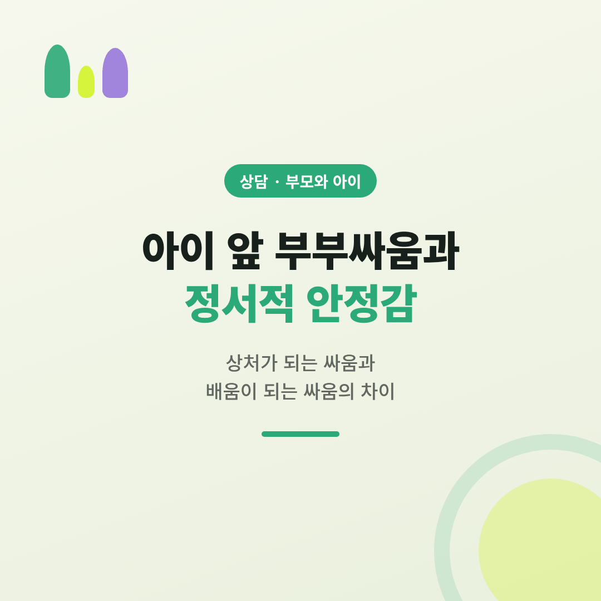
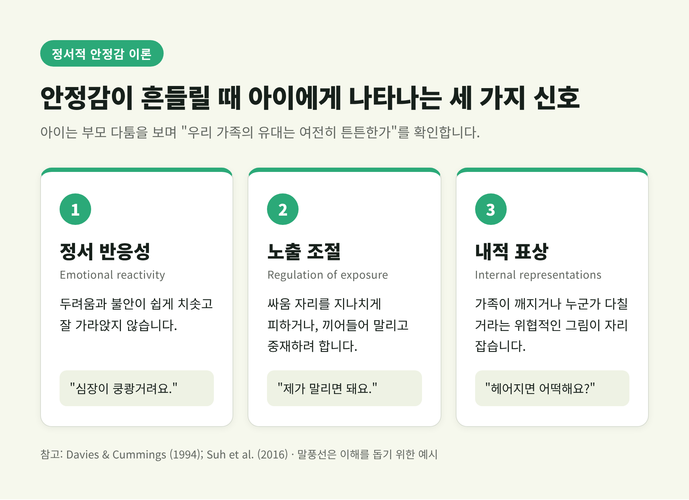
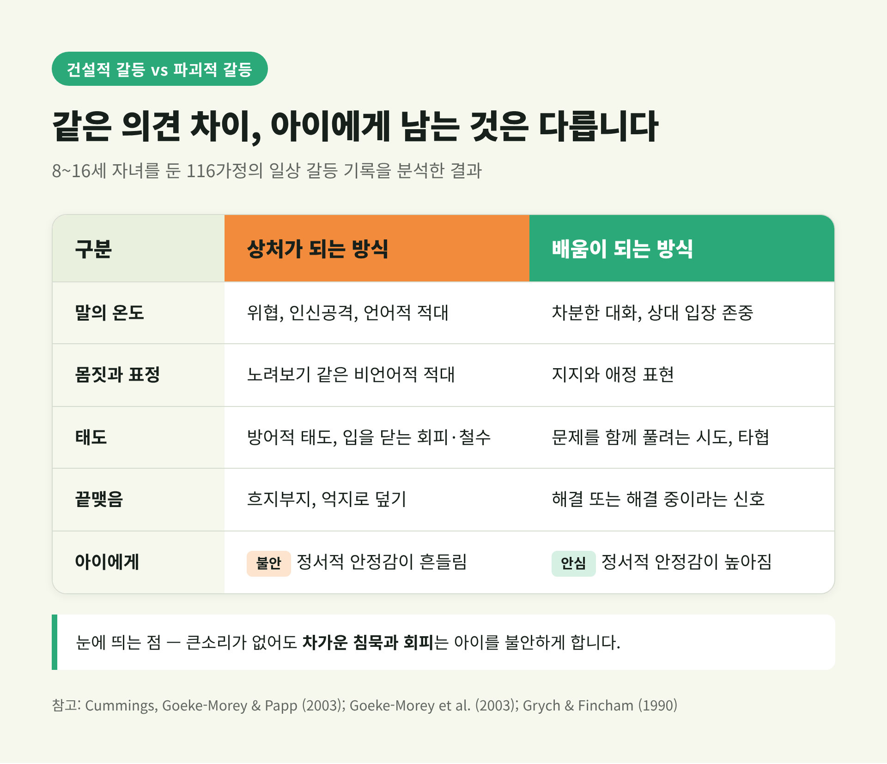
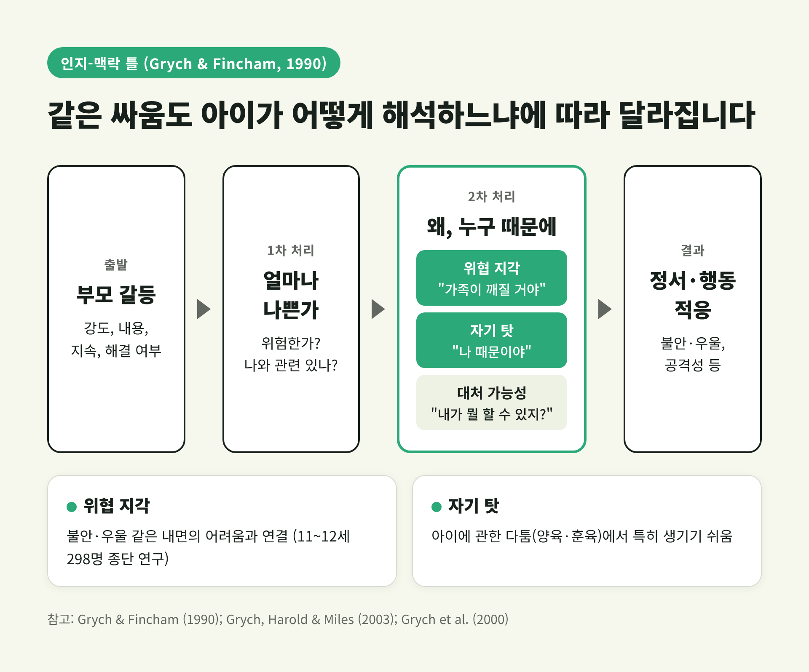
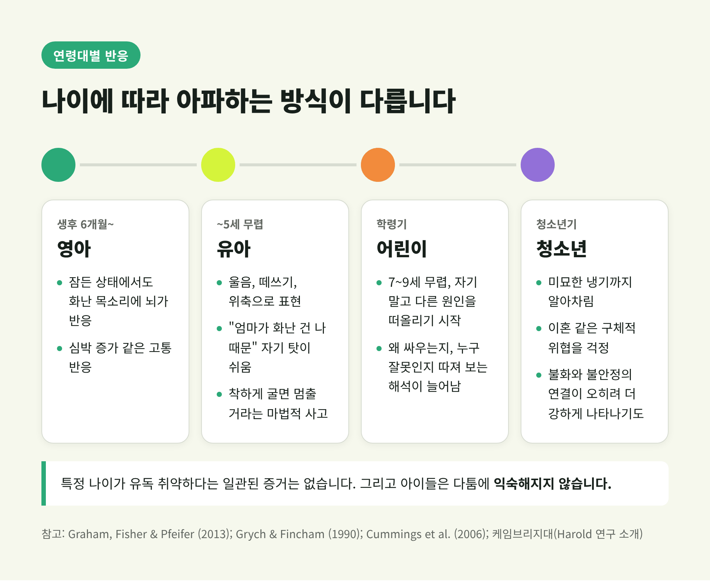
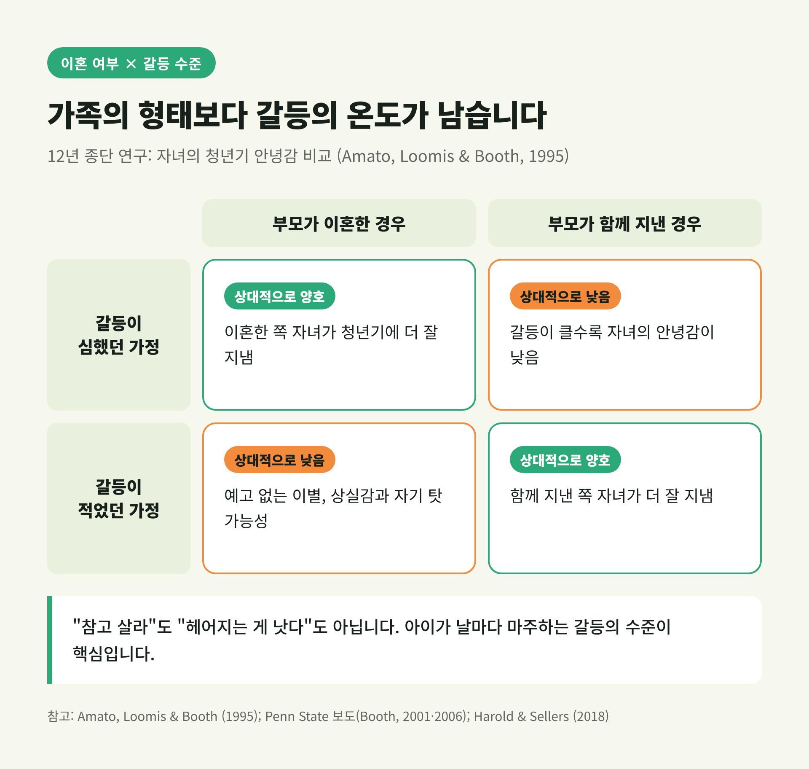
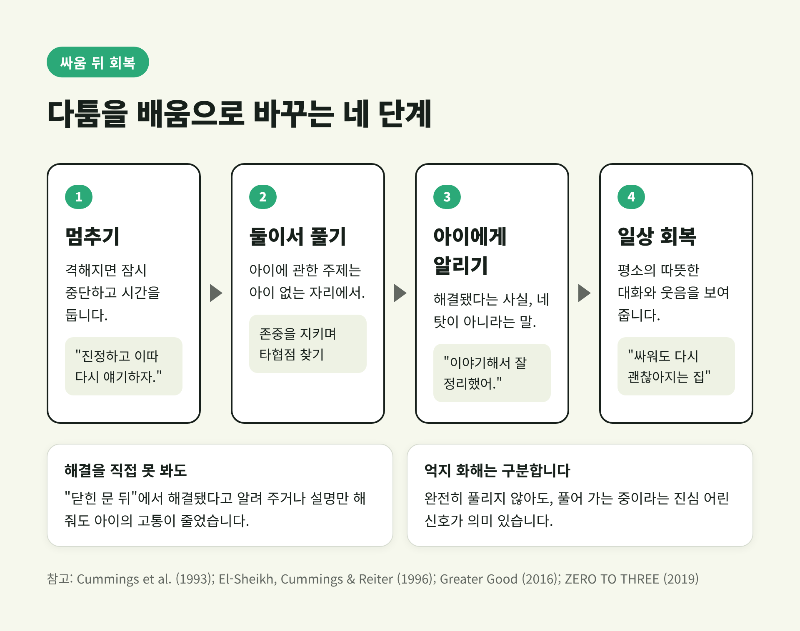

아이 앞 부부싸움과 정서적 안정감, 상처가 되는 싸움과 배움이 되는 싸움

이번 글에서는 아이 앞 부부싸움이 아이 마음에 무엇을 남기는지 정리해 보겠습니다. 부부가 다투는 것 자체를 탓하려는 글은 아닙니다. 발달심리학 연구가 가리키는 '상처가 되는 싸움'과 '배움이 되는 싸움'의 차이를, 아이의 눈높이에서 살펴보려 합니다.
먼저 세 줄로 요약하면 이렇습니다.
- 아이에게 영향을 주는 것은 다툼의 유무보다 다툼의 방식과 끝맺음입니다.
- 아이는 부모 싸움을 보며 "우리 가족은 안전한가", "내 탓인가"를 계속 묻습니다. 이 질문에 어떤 답을 얻느냐가 정서적 안정감을 좌우합니다.
- 다툰 뒤 화해하는 모습을 보여 주거나, 해결됐다고 설명해 주는 것만으로도 아이의 불안은 눈에 띄게 줄어듭니다. 다만 폭력은 '갈등'이 아니라 안전의 문제로 따로 다뤄야 합니다.
■ 아이는 부모 싸움에서 '안전'을 읽습니다
1994년 발달심리학자 패트릭 데이비스와 마크 커밍스는 정서적 안정감 가설을 내놓았습니다(Davies & Cummings, 1994). 애착 이론을 바탕으로 한 이 설명의 핵심은 간단합니다. 아이에게 부모의 관계는 배경이 아닙니다. 자신이 기대어 사는 집의 기둥입니다.
그래서 부모가 다툴 때 아이는 내용보다 먼저 하나를 확인합니다. "우리 가족의 유대는 여전히 튼튼한가." 연구자들은 정서적 안정감을 바로 이런 평가, 곧 가족의 결속이 긍정적이고 안정적이라는 아이의 믿음으로 정의합니다.
이 믿음이 흔들릴 때 아이에게서는 세 가지 신호가 나타납니다.
- 정서 반응성: 두려움과 불안이 쉽게 치솟고 잘 가라앉지 않습니다.
- 노출 조절: 싸움 자리를 지나치게 피하거나, 반대로 끼어들어 말리고 중재하려 합니다.
- 내적 표상: "엄마 아빠가 헤어질 거야", "누가 다칠 거야" 같은 위협적인 그림이 마음에 자리 잡습니다.

이 가설은 이후 여러 종단 연구로 검증되었습니다. 커밍스 연구팀이 2006년 발표한 두 연구가 대표적입니다(Cummings et al., 2006). 학령기에서 청소년기 아이를 둔 226가정, 유치원생을 둔 232가정을 약 2년간 추적했습니다. 두 연구 모두에서 부부 불화는 곧바로 아이 문제로 이어지지 않았습니다. 불화가 먼저 아이의 정서적 안정감을 흔들고, 그 불안정이 이후의 불안·우울·행동 문제를 예측했습니다.
부부 갈등과 아이 사이에 '안정감'이라는 다리가 놓여 있는 셈입니다. 뒤집어 말하면, 그 다리를 지켜 줄 여지가 부모에게 있다는 뜻이기도 합니다.
■ 같은 다툼도 방식에 따라 결과가 갈립니다
커밍스 연구팀은 실제 가정의 일상 갈등을 오래 들여다봤습니다. 2003년 연구에서는 8~16세 자녀를 둔 116가정의 부모가 집에서 일어난 다툼을 일지로 기록했습니다(Cummings, Goeke-Morey & Papp, 2003). 엄마가 1,638건, 아빠가 1,281건을 기록했고, 그중 아이가 지켜본 다툼만 엄마 보고 기준 580건이었습니다.
결과는 선명했습니다. 위협, 인신공격, 언어적 적대, 방어적 태도, 노려보기 같은 비언어적 적대, 그리고 입을 닫고 등을 돌리는 회피는 아이를 힘들게 했습니다. 반대로 차분한 대화, 상대에 대한 지지, 애정 표현은 아이의 정서적 안정감을 오히려 높였습니다.
미국 아이 175명과 영국 웨일스 아이 327명을 비교한 연구에서도 이 분류는 대체로 같게 나타났습니다(Goeke-Morey et al., 2003). 문화, 부모의 성별, 아이의 나이와 성별이 달라도 '파괴적 전술'과 '건설적 전술'의 구분은 유지됐습니다. 다만 '차분한 논의'만은 집단에 따라 평가가 흔들렸다고 보고됩니다.

눈여겨볼 대목은 침묵입니다. 흔히 큰소리만 피하면 괜찮다고 생각합니다. 그러나 커밍스는 부모의 냉랭한 철수가 오히려 공개적인 다툼보다 아이를 더 불안하게 할 수 있다고 말합니다. 아이는 말이 없어도 "뭔가 잘못됐다"는 것을 압니다.
예전에는 "아이 앞에서는 절대 싸우지 말라"가 정답처럼 여겨졌습니다. 지금 연구가 건네는 조언은 조금 다릅니다. 숨기기보다, 다투더라도 존중을 지키고 끝까지 풀어 가는 모습을 보여 주라는 쪽입니다.
물론 한계도 분명합니다. 건설적 갈등이 아이에게 '이롭다'는 근거는 주로 상관·관찰 연구에서 나왔습니다. 일부러 다툼을 보여 줄 이유는 없습니다. 피할 수 없는 의견 차이를 어떻게 다루느냐의 문제입니다.
■ 아이 머릿속에서 일어나는 두 가지 질문
같은 싸움을 봐도 아이마다 받아들이는 무게가 다릅니다. 존 그리치와 프랭크 핀첨은 1990년 '인지-맥락 틀'로 이 차이를 설명했습니다(Grych & Fincham, 1990). 요지는 갈등의 영향이 아이가 그 갈등을 어떻게 이해하느냐에 따라 달라진다는 것입니다.
아이는 두 단계를 거칩니다. 먼저 1차 처리에서 "이 싸움이 얼마나 나쁜가, 나와 관련 있는가"를 순간적으로 판단합니다. 이어 2차 처리에서 이유를 찾습니다. 왜 싸우는지, 누구 잘못인지, 내가 뭘 할 수 있는지를 따져 봅니다.
이때 특히 중요한 두 가지 해석이 있습니다.
- 위협 지각: "이러다 우리 가족이 깨질 거야."
- 자기 탓: "나 때문에 싸우는 거야."

이 두 해석은 실제로 아이의 어려움을 예측했습니다. 웨일스 11~12세 아동 298명을 추적한 연구에서, 부모 갈등은 시간이 지나며 위협 지각과 자기 탓을 키웠습니다(Grych, Harold & Miles, 2003). 위협 지각은 불안·우울 같은 내면의 문제로, 자기 탓은 공격성 같은 행동 문제로 이어졌습니다. 지역사회 아동과 쉼터 아동을 함께 살핀 다른 연구에서도 위협 지각은 남녀 모두에서 갈등과 정서 문제를 잇는 고리였습니다(Grych et al., 2000).
자기 탓이 가장 쉽게 생기는 순간은 다툼의 주제가 아이일 때입니다. 양육 방식이나 훈육을 두고 부딪히면 아이는 그 싸움의 원인이 자기라고 받아들이기 쉽습니다. 그리치와 핀첨은 이런 갈등이 아이로 하여금 가족 안에서 자기 자리를 의심하게 만들 수 있다고 지적합니다.
■ 나이에 따라 다르게 아파합니다
"아직 어려서 모른다"는 말은 연구 앞에서 힘을 잃습니다.
6~12개월 영아 20명을 잠든 상태에서 뇌 영상으로 살핀 연구가 있습니다(Graham, Fisher & Pfeifer, 2013). 다툼이 잦은 가정의 아기일수록 매우 화난 목소리에 스트레스와 정서 조절을 맡는 뇌 영역이 더 강하게 반응했습니다. 영국 연구자 고든 해럴드의 연구를 소개한 케임브리지대 자료에 따르면, 아이는 생후 6개월 무렵부터 부모 갈등에 심박 증가 같은 고통 반응을 보이고, 다섯 살까지는 울음이나 떼쓰기, 위축으로 드러내곤 합니다.
유아기와 학령 초기에는 자기 탓이 두드러집니다. 그리치와 핀첨이 정리한 연구에서 5~6세 아이들은 엄마의 분노가 자기 때문이라고 믿었지만, 7~9세는 다른 원인을 떠올렸습니다. 이 시기 아이는 부모를 좋게 보고 싶어 하기에 탓을 자기 쪽으로 돌리기 쉽습니다. 내가 착하게 굴면 싸움이 멈출 거라는 '마법적 사고'도 흔합니다.
학령기 후반과 청소년기에는 보는 눈이 예리해집니다. 미묘한 냉기까지 알아차리고, 이혼 같은 구체적 위협을 떠올립니다. 커밍스 연구팀의 2006년 연구에서는 오히려 나이가 많은 아이일수록 부부 불화와 정서적 불안정의 연결이 더 강했습니다.

그렇다고 특정 나이가 유독 취약하다는 일관된 증거는 없습니다. 나이마다 아파하는 방식이 다를 뿐입니다. 그리고 아이들은 익숙해지지도 않습니다. 커밍스는 "아이들은 적응하지 않는다"고 말합니다. 다툼이 잦은 가정의 미취학 아동이 어른들의 다툼에 오히려 더 큰 고통을 보였다는 연구도 있습니다(El-Sheikh, 1994).
■ 부부 갈등은 양육으로 번집니다
부부 사이의 냉기는 거실에만 머물지 않습니다. 이를 '스필오버(spillover) 가설'이라고 부릅니다. 한 관계에서 생긴 긴장이 다른 관계로 흘러넘친다는 뜻입니다.
39개 연구를 묶은 메타분석에서 부부 갈등과 양육의 질은 중간 정도 크기의 뚜렷한 연관을 보였습니다(Krishnakumar & Buehler, 2000). 가장 영향을 받은 양육 행동은 가혹한 훈육과 아이를 따뜻하게 받아 주는 태도의 감소였습니다.
하루 단위로 살핀 연구도 있습니다. 8~13세 자녀를 둔 가정을 56일 연속 기록하게 했더니, 부부가 다툰 날 부모는 아이에게도 더 짜증스럽고 참을성 없게 대했습니다(Sears et al., 2016). 기분 탓만으로는 설명되지 않았습니다. 한국아동패널의 만 4세 유아 986명 자료에서도 부정적인 부부관계는 유아의 행동 문제에 직접, 그리고 양육 행동을 거쳐 간접적으로 영향을 주었습니다(Min, Kim & Kim, 2016).
그러니 아이를 지키는 일은 싸운 뒤 아이를 대하는 태도까지 포함합니다. 부부에게 남은 화가 엉뚱하게 아이에게 쏟아지지 않는지 한 번 더 살피면 좋겠습니다.
■ 이혼 여부보다 갈등의 수준이 중요합니다
"아이 때문에 참고 산다"는 말은 오래된 고민입니다. 연구는 이 질문을 조금 다르게 바꿔 놓았습니다.
12년간 가족을 추적한 연구에서, 이혼의 영향은 이혼 전 갈등 수준에 따라 정반대로 나타났습니다(Amato, Loomis & Booth, 1995). 갈등이 심했던 가정에서는 부모가 이혼한 쪽의 자녀가 청년기에 더 잘 지냈습니다. 갈등이 적었던 가정에서는 부모가 함께 지낸 쪽의 자녀가 더 잘 지냈습니다. 이혼하지 않은 가정 안에서도 갈등이 클수록 자녀의 안녕감은 낮았습니다.

갈등이 적던 부부의 이혼이 아이에게 특히 힘든 이유도 짚어 둘 만합니다. 예고 없이 닥친 이별 앞에서 아이는 상실감과 배신감을 느끼고, 스스로를 탓할 가능성이 더 크다고 합니다.
이혼 뒤에도 마찬가지입니다. 캐나다 법무부 보고서가 정리한 연구들에 따르면, 이혼 후 적대가 계속되면 양쪽 부모를 자주 오가는 아이가 오히려 갈등에 더 많이 노출됐습니다. 아이를 사이에 둔 심한 갈등은 그렇지 않은 갈등보다 행동 문제를 더 잘 예측했습니다. 영국의 해럴드와 셀러스도 2018년 리뷰에서, 갈등의 방식이 아이에게 미치는 영향은 부모가 함께 살든 따로 살든 나타난다고 정리했습니다.
이 결과를 "참고 살라"나 "헤어지는 게 낫다" 어느 한쪽으로 읽을 필요는 없습니다. 아이에게 남는 것은 가족의 형태보다, 아이가 날마다 마주하는 갈등의 온도라는 뜻에 가깝습니다.
■ 아이를 싸움 한가운데 세우지 않기
부부 갈등이 아이에게 가장 직접적으로 닿는 경로는 '삼각관계화'입니다. 두 사람의 긴장을 풀기 위해 세 번째 사람인 아이를 끌어들이는 것입니다.
형태는 다양합니다.
- "너는 누구 편이야?" 하고 편을 들게 하기
- 아이 앞에서 다른 부모를 험담하기
- "아빠한테 가서 말해" 하고 메신저로 쓰기
- 부부 문제를 아이 탓으로 돌리기
416가정을 4년간 추적한 연구에서, 부부 적대 수준을 고려한 뒤에도 삼각관계화를 겪는 청소년은 친구에게서 받는 지지가 적고 또래에게 거절당한다고 느끼는 경향이 컸습니다(Buehler, Franck & Cook, 2009). 부모 사이에 끼인 아이의 마음은 집 밖의 관계까지 흔들립니다.
가상 사례 1 (여러 상담 장면을 일반화해 꾸민 이야기입니다) 초등학교 4학년 서진이는 부모가 다툰 날이면 엄마 방과 아빠 방을 오갑니다. 엄마는 "아빠는 원래 저래"라고 하고, 아빠는 "엄마한테 물어봐"라고 합니다. 서진이는 어느 쪽 말에도 고개를 끄덕이지 못한 채 숙제를 미룹니다. 이 아이에게 필요한 것은 누가 옳은지에 대한 판정이 아닙니다. "이건 엄마 아빠가 풀 일이야. 너는 신경 쓰지 않아도 돼"라는 한마디입니다.
■ 싸움 뒤 회복을 보여 주는 법
희망적인 연구도 있습니다. 5~6세, 9~10세 아이에게 어른의 다툼 영상을 보여 준 실험에서, 해결 장면이 아이 눈앞이 아니라 "닫힌 문 뒤"에서 일어났다고 알려 줘도 아이의 고통은 줄었습니다(Cummings et al., 1993). 나중에 어른이 어떻게 풀었는지 설명만 해 줘도 마찬가지였습니다. 4~5세 아이들은 앞서 해결된 다툼을 본 경우, 다음 다툼을 보면서 덜 괴로워하고 결말을 덜 비관했습니다(El-Sheikh, Cummings & Reiter, 1996).
다만 아이들은 억지 화해와 진짜 화해를 구분한다고 합니다. 완전히 풀리지 않았더라도, 풀어 가는 중이라는 진심 어린 신호가 아이에게는 의미가 있습니다.

아이에게 건넬 수 있는 말을 상황별로 적어 봅니다. 그대로 쓰기보다 각 가정의 말투로 바꿔 쓰시길 권합니다.
- 다툼이 격해질 때(부부끼리): "지금은 대화가 안 되네. 진정하고 이따 다시 얘기하자."
- 다툼을 본 아이에게: "아까 엄마 아빠가 큰 소리 내서 놀랐지. 의견이 달라서 그랬어."
- 자기 탓을 덜어 줄 때: "이건 네 잘못이 아니야. 어른들 문제고, 우리가 풀 거야."
- 해결 뒤에: "아까 그 일은 둘이 얘기해서 이렇게 하기로 했어. 이제 괜찮아."
- 아직 풀리지 않았을 때: "아직 다 정리되진 않았지만, 서로 노력하고 있어. 너를 사랑하는 마음은 그대로야."
몇 가지 덧붙일 점도 있습니다. 아이를 주제로 한 다툼은 되도록 아이가 없는 자리에서 하시길 권합니다. 앞서 본 자기 탓이 가장 쉽게 생기는 지점입니다. 성 문제처럼 사적인 주제도 마찬가지입니다. 반대로 일상의 작은 의견 차이를 존중하며 맞춰 가는 모습은, 아이에게 갈등을 다루는 법을 보여 주는 좋은 본보기가 됩니다.
가상 사례 2 (일반화한 가상의 이야기입니다) 여섯 살 하은이는 저녁 식탁에서 부모의 언성이 높아지자 숟가락을 내려놓았습니다. 그날 밤 엄마는 하은이 옆에 누워 "아까 무서웠지? 아빠랑 이야기해서 잘 정리했어"라고 말했습니다. 다음 날 아침, 부모는 하은이 앞에서 평소처럼 농담을 주고받았습니다. 거창한 화해 장면은 없었지만, 하은이는 '싸워도 다시 괜찮아지는 집'을 한 번 더 경험했습니다.
■ 폭력은 '갈등'이 아니라 안전의 문제입니다
여기까지의 이야기는 일상의 의견 충돌에 관한 것입니다. 때리기, 물건 던지기, 위협, 공포를 주는 통제는 다릅니다. 건설적이냐 파괴적이냐를 따질 단계가 아닙니다.
4~7세 아이 앞에서 다툼을 재연한 연구에서 신체적 다툼은 가장 큰 고통을 일으켰습니다(El-Sheikh & Reiter, 1996). 청소년 연구에서도 신체적 부부폭력은 증상의 심각도를 가장 강하게 예측했습니다(Suh et al., 2016). 그리치와 핀첨도 빈번하거나 폭력적인 갈등은 해결되더라도 해로울 수 있다고 봤습니다.
한국 법도 같은 입장입니다. 아동복지법 제17조 제5호는 아동의 정신건강과 발달에 해를 끼치는 정서적 학대를 금지하며, 가정폭력에 아동을 노출시키는 행위를 여기에 포함한다고 명시합니다. 위반하면 5년 이하의 징역 또는 5천만 원 이하의 벌금에 처할 수 있습니다(제71조).
이런 상황이라면 대화법보다 안전이 먼저입니다. 아래 연락처를 망설이지 말고 이용하시길 바랍니다.
- 112: 경찰. 가정폭력 현장 출동과 응급 조치, 신고·상담
- 1366 여성긴급전화: 365일 24시간. 가정폭력·성폭력·스토킹 등 피해 긴급 상담과 보호, 경찰·병원·법률 지원 연계 (휴대전화는 지역번호+1366으로 지역 센터 연결)
- 1388 청소년상담: 365일 24시간. 전화·문자·카카오톡 '청소년상담1388'·누리집. 9~24세 청소년과 그 부모 모두 이용 가능
- 1577-0199 정신건강위기상담전화: 가까운 정신건강복지센터로 연결되며, 야간·공휴일에는 광역정신건강복지센터로 이어집니다
- 109 자살예방상담전화: 24시간
- 1644-7077 한국가정법률상담소: 가정폭력 피해자 무료 법률 지원
폭력이 없더라도 다툼이 잦고 격해서 스스로 멈추기 어렵다면, 부부상담이나 가족상담을 받아 보시길 권합니다. 아이에게 수면 문제, 퇴행, 등교 거부, 지나친 눈치 보기가 이어진다면 아동·청소년 상담 전문가와 이야기해 보는 것도 좋겠습니다. 이 글은 일반적인 정보이며 개별 가정의 상황을 진단하지 않습니다.
정리하면 이렇습니다.
연구들은 대부분 미국과 영국 가정을 대상으로 했고, 한국 가정에 그대로 옮기기에는 한계가 있습니다. 그래도 방향은 일관됩니다. 아이를 다치게 하는 것은 의견 차이 자체가 아닙니다. 위협과 모욕, 차가운 침묵, 그리고 아이를 싸움 한가운데 세우는 일입니다. 반대로 다투더라도 존중을 지키고, 끝을 맺고, 그 끝을 아이에게 알려 준다면 다툼은 배움이 될 수 있습니다.
"싸우지 않는 부모보다, 잘 화해하는 부모."
완벽한 부부는 없습니다. 오늘 이미 언성을 높였다고 해도 늦지 않았습니다. 아이에게 "우리 다시 괜찮아졌어"라고 말해 줄 기회는, 다툼이 끝난 바로 그 자리에서 다시 시작됩니다.
참고자료
- Davies, P. T., & Cummings, E. M. (1994). Marital conflict and child adjustment: An emotional security hypothesis. Psychological Bulletin, 116(3), 387–411. PubMed
- Cummings, E. M., & Davies, P. (1996). Emotional security as a regulatory process. Development and Psychopathology, 8(1), 123–139. Cambridge
- Cummings, E. M., et al. (2006). Interparental discord and child adjustment. Child Development, 77(1), 132–152. PDF
- Suh, G. W., et al. (2016). Effects of the inter-parental relationship on adolescents' emotional security and adjustment. Developmental Psychology, 52(10). eScholarship
- Cummings, E. M., Goeke-Morey, M. C., & Papp, L. M. (2003). Children's responses to everyday marital conflict tactics in the home. Child Development, 74(6), 1918–1929. PubMed
- Goeke-Morey, M. C., et al. (2003). Categories and continua of destructive and constructive marital conflict tactics. Journal of Family Psychology, 17(3), 327–338. Cardiff ORCA
- Grych, J. H., & Fincham, F. D. (1990). Marital conflict and children's adjustment: A cognitive-contextual framework. Psychological Bulletin, 108(2), 267–290. PDF
- Grych, J. H., Harold, G. T., & Miles, C. J. (2003). A prospective investigation of appraisals as mediators. Child Development, 74(4), 1176–1193. Cardiff ORCA
- Grych, J. H., et al. (2000). Interparental conflict and child adjustment: Testing the mediational role of appraisals. Child Development, 71(6), 1648–1661.
- Cummings, E. M., et al. (1993). Children's responses to interadult anger as a function of information about resolution. Developmental Psychology, 29(6), 978–985.
- El-Sheikh, M., Cummings, E. M., & Reiter, S. (1996). Preschoolers' responses to ongoing interadult conflict. Journal of Abnormal Child Psychology, 24, 665–679. Springer
- El-Sheikh, M., & Reiter, S. L. (1996). Children's responding to live interadult conflict. Journal of Abnormal Child Psychology, 24(4), 401–415. Springer
- Graham, A. M., Fisher, P. A., & Pfeifer, J. H. (2013). Psychological Science. APS 보도자료
- Krishnakumar, A., & Buehler, C. (2000). Interparental conflict and parenting behaviors: A meta-analytic review. Family Relations, 49(1), 25–44.
- Sears, M. S., et al. (2016). Spillover in the home. Journal of Marriage and Family, 78, 127–141. PDF
- Min, M., Kim, J. M., & Kim, J. (2016). The effects of marital relationship, mother's parenting stress and positive parenting behavior on the behavioral problems of preschoolers. Korean Journal of Childcare and Education, 12(6), 103–121. KoreaScience
- Amato, P. R., Loomis, L. S., & Booth, A. (1995). Parental divorce, marital conflict, and offspring well-being during early adulthood. Social Forces, 73(3), 895–915. Scilit
- Harold, G. T., & Sellers, R. (2018). 부모 간 갈등과 아동·청소년 정신건강에 관한 리뷰. Journal of Child Psychology and Psychiatry. PubMed
- Buehler, C., Franck, K. L., & Cook, E. C. (2009). Adolescents' triangulation in marital conflict and peer relations. Journal of Research on Adolescence, 19(4), 669–689. CORE
- Department of Justice Canada (2002). An Overview of the Risks and Protectors for Children of Separation and Divorce. 링크
- University of Cambridge, Faculty of Education. How research evidence is transforming national policies on parental conflict. 링크
- Greater Good Magazine (2016). What Happens to Kids When Parents Fight. 링크
- 서울신문 (2022.6.25). "아이 앞 부부싸움도 학대입니다". 링크
- 여성가족부 가정폭력 피해 지원 안내 링크 · 여성긴급전화 1366 링크 · 복지로 청소년상담 1388 링크 · 보건복지부 정신건강위기상담 링크 · 주간경향 109 링크